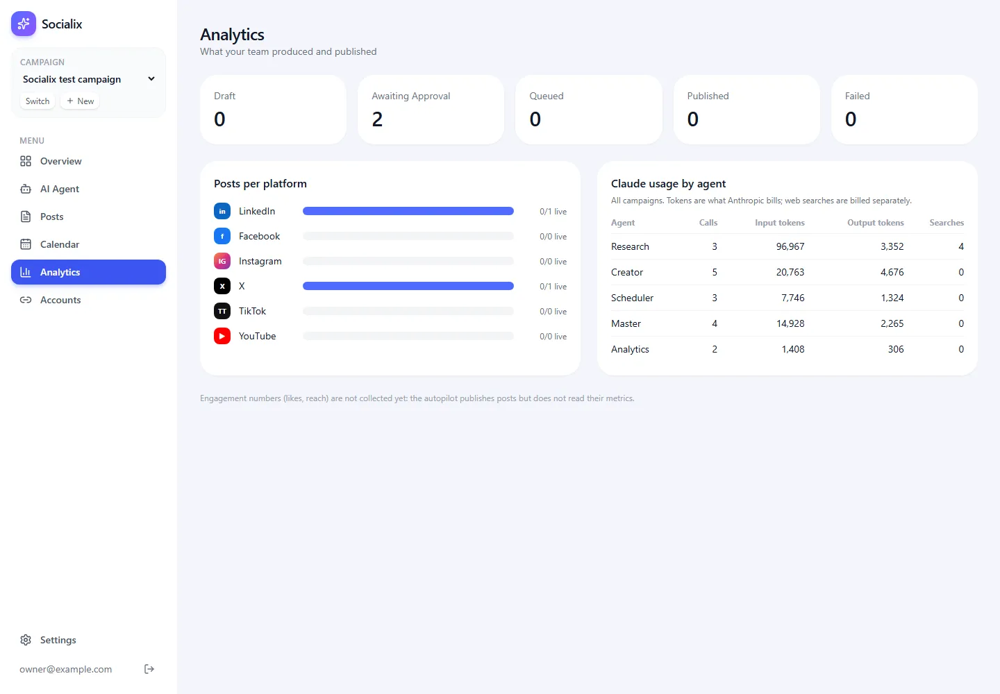
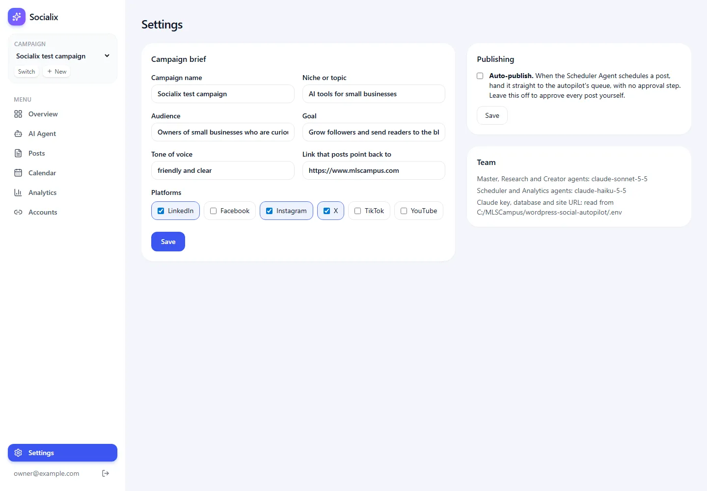

Analytics Page
Post counts by status and platform, and Claude token usage per agent.
▶ Watch this part (02:33:15)The last page answers two questions: "what has my team produced and published?" and "what is it costing me in Claude calls?". We build the Analytics page, and we also look at the Settings page, where the owner edits the campaign brief and decides whether posts need approval.
What the video does
The presenter wants analytics from the social networks themselves, fetched through Blotato's API and MCP tools, and an analytics tool for the Analytics Agent (at 02:33:20). His whiteboard shows overview cards (posts, views, engagements, followers), a performance chart, a platform breakdown donut, top performing posts, audience growth and an "AI Analytics Agent" chat. The prompt on screen asks for:
- summary cards for Total Posts Published, Total Views, Publishing Success Rate and Estimated Time Saved;
- charts for daily posting activity, views and engagement, and a platform donut;
- date range filters and campaign selection;
- Blotato MCP tools to fetch real analytics, reusable analytics tools for the Analytics Agent, stored and synced in the database, "handling missing metrics gracefully and avoid displaying fake data".
The result (02:34:32) shows Posts published 3, Publishing success rate 100%, Est. time saved 2h, a daily activity chart, and Total views "—" with "Not reported by the platforms yet": the networks had not reported numbers for the new posts. There are 7 / 30 / 90 day and custom ranges and a "Sync now" button. One error appears and goes away after a refresh. He ends the course by committing, opening a pull request and fixing CodeRabbit's comments (02:35:45).
usage table. There are no charts, date filters or donut.The Analytics page: src/app/dashboard/analytics/page.tsx
New to tokens? What the usage numbers mean
Claude reads and writes text in pieces called tokens (roughly a
word or part of a word). Every API call reports input tokens (everything we sent: the system prompt,
the conversation, the tool definitions and tool results) and output tokens (what Claude wrote,
including its tool calls). Anthropic bills by these two counts, at different rates per
model. Web searches are billed separately, per search. Our runner saves
these counts for every call in the usage table (step 13 shows the
runner), so the page can add them up.
import { redirect } from "next/navigation";
import { eq, sql } from "drizzle-orm";
import { db, schema } from "@/lib/db";
import { PLATFORMS, type PostStatus } from "@/lib/db/schema";
import { getCurrentCampaign } from "@/lib/campaign";
import { syncStatuses } from "@/lib/publishing";
import { Card, PageHeader, PLATFORM_LABEL, PlatformBadge } from "@/components/ui";
const STATUSES: PostStatus[] = ["draft", "awaiting_approval", "queued", "published", "failed"];
export default async function AnalyticsPage() {
const campaign = await getCurrentCampaign();
if (!campaign) redirect("/dashboard/campaigns/new");
await syncStatuses(campaign.id).catch(() => 0);
const posts = await db.query.posts.findMany({ where: eq(schema.posts.campaignId, campaign.id) });
const usage = await db
.select({
agent: schema.usage.agent,
calls: sql<number>`count(*)::int`,
input: sql<number>`coalesce(sum(${schema.usage.inputTokens}),0)::int`,
output: sql<number>`coalesce(sum(${schema.usage.outputTokens}),0)::int`,
searches: sql<number>`coalesce(sum(${schema.usage.webSearches}),0)::int`,
})
.from(schema.usage)
.groupBy(schema.usage.agent);
const max = Math.max(1, ...PLATFORMS.map((p) => posts.filter((x) => x.platform === p).length));
return (
<>
<PageHeader title="Analytics" subtitle="What your team produced and published" />
<div className="grid gap-4 sm:grid-cols-3 lg:grid-cols-5">
{STATUSES.map((s) => (
<Card key={s}>
<p className="text-sm capitalize text-gray-500">{s.replace("_", " ")}</p>
<p className="mt-1 text-3xl font-semibold">{posts.filter((p) => p.status === s).length}</p>
</Card>
))}
</div>
<div className="mt-6 grid gap-6 lg:grid-cols-2">
<Card>
<h2 className="mb-4 font-semibold">Posts per platform</h2>
<div className="space-y-3">
{PLATFORMS.map((p) => {
const total = posts.filter((x) => x.platform === p).length;
const done = posts.filter((x) => x.platform === p && x.status === "published").length;
return (
<div key={p} className="flex items-center gap-3">
<PlatformBadge platform={p} size="sm" />
<span className="w-20 text-sm">{PLATFORM_LABEL[p]}</span>
<div className="h-3 flex-1 rounded-full bg-gray-100">
<div className="h-3 rounded-full bg-brand-500" style={{ width: `${(total / max) * 100}%` }} />
</div>
<span className="w-16 text-right text-xs text-gray-500">
{done}/{total} live
</span>
</div>
);
})}
</div>
</Card>
<Card>
<h2 className="mb-1 font-semibold">Claude usage by agent</h2>
<p className="mb-4 text-xs text-gray-500">All campaigns. Tokens are what Anthropic bills; web searches are billed separately.</p>
<table className="w-full text-sm">
<thead className="text-left text-xs text-gray-400">
<tr>
<th className="pb-2">Agent</th>
<th className="pb-2 text-right">Calls</th>
<th className="pb-2 text-right">Input tokens</th>
<th className="pb-2 text-right">Output tokens</th>
<th className="pb-2 text-right">Searches</th>
</tr>
</thead>
<tbody>
{usage.map((u) => (
<tr key={u.agent} className="border-t border-gray-100">
<td className="py-2 capitalize">{u.agent}</td>
<td className="py-2 text-right">{u.calls}</td>
<td className="py-2 text-right">{u.input.toLocaleString()}</td>
<td className="py-2 text-right">{u.output.toLocaleString()}</td>
<td className="py-2 text-right">{u.searches}</td>
</tr>
))}
{usage.length === 0 && (
<tr>
<td colSpan={5} className="py-6 text-center text-gray-400">
No agent calls yet.
</td>
</tr>
)}
</tbody>
</table>
</Card>
</div>
<p className="mt-6 text-xs text-gray-400">Engagement numbers (likes, reach) are not collected yet: the autopilot publishes posts but does not read their metrics.</p>
</>
);
}Line by line
| Line(s) | Code | What it does & why |
|---|---|---|
| 1–7 | imports | redirect; Drizzle's eq and the sql tag for raw SQL pieces; the
database; the platform list and status type; the current campaign; syncStatuses from
step 18; UI pieces. |
| 9 | const STATUSES: PostStatus[] = [...] | The five statuses that get a card.
cancelled is left out on purpose: a cancelled post is neither work in progress nor a result. |
| 11–13 | AnalyticsPage(), getCurrentCampaign() | A server component; no campaign means redirect. |
| 14 | await syncStatuses(campaign.id).catch(() => 0); | Before counting, asks the autopilot how
queued posts are doing, so "published" is up to date. .catch(() => 0) means: if the MCP server or the
autopilot database is down, show the page with the last known statuses instead of an error page. |
| 15 | db.query.posts.findMany({ where: eq(campaignId) }) | All posts of this campaign, once. The cards and bars below count them in memory. |
| 16–25 | db.select({...}).from(schema.usage).groupBy(schema.usage.agent) | One row per agent:
count(*) is the number of Claude calls; sum(...) adds input tokens, output tokens and web searches.
coalesce(..., 0) turns an empty sum (NULL) into 0. ::int matters: Postgres returns counts
and sums as big numbers that the pg driver hands over as strings; casting to int gives real
numbers, so toLocaleString() can add thousands separators. There is no campaign filter: usage is for
all campaigns, as the page says. |
| 27 | const max = Math.max(1, ...PLATFORMS.map(...)) | The largest post count of any network. The
1 avoids dividing by zero when there are no posts. |
| 32–39 | status cards | One card per status with its count. s.replace("_", " ") plus the
capitalize class turns awaiting_approval into "Awaiting Approval". |
| 41–61 | "Posts per platform" | For each network: badge, name, a bar, and "published/total live". The bar's width is
total / max as a percentage (line 52), so the busiest network fills the bar and the others are relative to
it. This is an inline style because Tailwind classes cannot hold a computed number. |
| 62–94 | "Claude usage by agent" | A plain table: agent, calls, input tokens, output tokens, searches. The note on line 64 says tokens are what Anthropic bills and searches are billed separately. When the table is empty it shows "No agent calls yet." |
| 96 | footnote | States plainly that likes and reach are not collected, so nobody mistakes the page for engagement analytics. |

What our test run cost in tokens
After one full Master Agent run ("Research 2 trending topics about AI tools for small businesses this week, then write one LinkedIn post and one X post about the best one, and schedule them for tomorrow at good times."), the page showed:
| Agent | Model | Calls | Input tokens | Output tokens | Searches |
|---|---|---|---|---|---|
| Research | claude-sonnet-5-5 | 3 | 96,967 | 3,352 | 4 |
| Creator | claude-sonnet-5-5 | 5 | 20,763 | 4,676 | 0 |
| Scheduler | claude-haiku-5-5 | 3 | 7,746 | 1,324 | 0 |
| Master | claude-sonnet-5-5 | 4 | 14,928 | 2,265 | 0 |
| Analytics | claude-haiku-5-5 | 2 | 1,408 | 306 | 0 |
| Total | 17 | 141,812 | 11,923 | 4 |
The Settings page: src/app/dashboard/settings/page.tsx
Settings holds the one switch that matters most for safety: Auto-publish. Off (the default), every post the Scheduler Agent schedules waits for the owner's Approve. On, it goes straight to the autopilot's queue.
import { redirect } from "next/navigation";
import { getCurrentCampaign } from "@/lib/campaign";
import { getAutoPublish } from "@/lib/publishing";
import { config } from "@/lib/env";
import { Card, PageHeader } from "@/components/ui";
import { CampaignFields } from "@/components/campaign-form";
import { setAutoPublishAction, updateCampaign } from "../actions";
export default async function SettingsPage() {
const campaign = await getCurrentCampaign();
if (!campaign) redirect("/dashboard/campaigns/new");
const autoPublish = await getAutoPublish();
return (
<>
<PageHeader title="Settings" />
<div className="grid gap-6 lg:grid-cols-[1.4fr_1fr]">
<Card>
<h2 className="mb-4 font-semibold">Campaign brief</h2>
<form action={updateCampaign} className="flex flex-col gap-6">
<input type="hidden" name="id" value={campaign.id} />
<CampaignFields campaign={campaign} />
<button className="self-start rounded-xl bg-brand-600 px-5 py-2.5 text-sm font-medium text-white">Save</button>
</form>
</Card>
<div className="flex flex-col gap-6">
<Card>
<h2 className="font-semibold">Publishing</h2>
<form action={setAutoPublishAction} className="mt-3 flex flex-col gap-3">
<label className="flex items-start gap-3 text-sm">
<input type="checkbox" name="autoPublish" defaultChecked={autoPublish} className="mt-1" />
<span>
<strong>Auto-publish.</strong> When the Scheduler Agent schedules a post, hand it straight to the autopilot's queue, with no approval step. Leave this off to approve every post yourself.
</span>
</label>
<button className="self-start rounded-xl border border-gray-200 px-4 py-2 text-sm">Save</button>
</form>
</Card>
<Card>
<h2 className="font-semibold">Team</h2>
<ul className="mt-3 space-y-1 text-sm text-gray-600">
<li>Master, Research and Creator agents: {config.modelSmart}</li>
<li>Scheduler and Analytics agents: {config.modelFast}</li>
<li>Claude key, database and site URL: read from {config.autopilotDir}/.env</li>
</ul>
</Card>
</div>
</div>
</>
);
}Line by line
| Line(s) | Code | What it does & why |
|---|---|---|
| 1–7 | imports | The current campaign, getAutoPublish, the settings reader config, UI
pieces, the campaign form fields shared with the "new campaign" page, and two server actions. |
| 9–12 | SettingsPage() | Loads the campaign (or redirects) and the current auto-publish value. |
| 17–25 | "Campaign brief" form | The same fields as when the campaign was created
(step 7), filled with the current values. A hidden id says which campaign
to update. The agents read this brief in their system prompt, so changes affect the next request. |
| 27–38 | "Publishing" card | A form with one checkbox named autoPublish.
defaultChecked={autoPublish} shows the saved value. A checked box is sent as "on"; an unchecked box
is not sent at all, so the action's test formData.get("autoPublish") === "on" is false and the setting is
saved as off. |
| 39–46 | "Team" card | Shows which models run which agents (MODEL_SMART, MODEL_FAST) and
where the Claude key, database and site URL come from: the autopilot's .env folder. It shows
the folder, never the values. |

Try it
- Open Analytics. If any posts are queued, the page first refreshes their status from the autopilot (this can take a second).
- Send one message to an agent on the AI Agent page, then reload Analytics: that agent's call count goes up.
- Open Settings and look at the Publishing card. Leave Auto-publish unchecked.
- Expecting views or likes. They are not collected; the page says so. Do not add made-up numbers.
- Thinking usage is per campaign. The usage table covers all campaigns; the post counts are for the current campaign only.
- "Published" stays at 0 although a post went out. The worker published it, but the status sync could not reach the autopilot (the page silently skips a failed sync). Check that the database container runs, then reload or press Refresh statuses on the Posts page.
- Counts as text. If you write your own
count(*)query without::int, thepgdriver returns a string like"3", and adding numbers joins text instead ("3" + 1is"31"). - Turning on auto-publish to "save clicks". Then a wrong date, a wrong fact or a typo goes live with nobody checking.
- The video fetches views and engagement from the networks through Blotato; ours has no engagement metrics, by design, and says so.
- Our page shows post counts by status, live posts per network, and Claude usage per agent from the
usagetable (one row per model call). - It syncs statuses first and tolerates a failed sync.
::intcasts andcoalescekeep the numbers clean. - In our test run the Research Agent used about two thirds of all input tokens.
- Settings holds the campaign brief and the Auto-publish switch, which stays off by default.